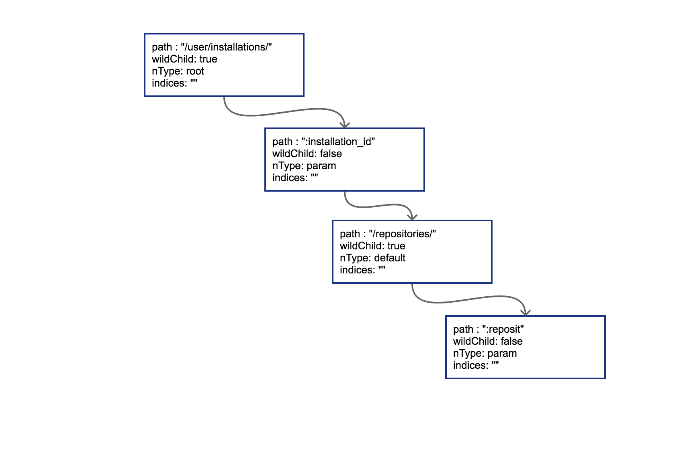

5.2 router 请求路由
在常见的Web框架中，router是必备的组件。Go语言圈子里router也时常被称为http的multiplexer。在上一节中我们通过对Burrow代码的简单学习，已经知道如何用http标准库中内置的mux来完成简单的路由功能了。如果开发Web系统对路径中带参数没什么兴趣的话，用http标准库中的mux就可以。
RESTful是几年前刮起的API设计风潮，在RESTful中除了GET和POST之外，还使用了HTTP协议定义的几种其它的标准化语义。具体包括：
const (
MethodGet = "GET"
MethodHead = "HEAD"
MethodPost = "POST"
MethodPut = "PUT"
MethodPatch = "PATCH" // RFC 5789
MethodDelete = "DELETE"
MethodConnect = "CONNECT"
MethodOptions = "OPTIONS"
MethodTrace = "TRACE"
)
来看看RESTful中常见的请求路径：
GET /repos/:owner/:repo/comments/:id/reactions
POST /projects/:project_id/columns
PUT /user/starred/:owner/:repo
DELETE /user/starred/:owner/:repo
相信聪明的你已经猜出来了，这是Github官方文档中挑出来的几个API设计。RESTful风格的API重度依赖请求路径。会将很多参数放在请求URI中。除此之外还会使用很多并不那么常见的HTTP状态码，不过本节只讨论路由，所以先略过不谈。
如果我们的系统也想要这样的URI设计，使用标准库的mux显然就力不从心了。
5.2.1 httprouter
较流行的开源go Web框架大多使用httprouter，或是基于httprouter的变种对路由进行支持。前面提到的github的参数式路由在httprouter中都是可以支持的。
因为httprouter中使用的是显式匹配，所以在设计路由的时候需要规避一些会导致路由冲突的情况，例如：
conflict:
GET /user/info/:name
GET /user/:id
no conflict:
GET /user/info/:name
POST /user/:id
简单来讲的话，如果两个路由拥有一致的http方法(指 GET/POST/PUT/DELETE)和请求路径前缀，且在某个位置出现了A路由是wildcard（指:id这种形式）参数，B路由则是普通字符串，那么就会发生路由冲突。路由冲突会在初始化阶段直接panic：
panic: wildcard route ':id' conflicts with existing children in path '/user/:id'
goroutine 1 [running]:
github.com/cch123/httprouter.(*node).insertChild(0xc4200801e0, 0xc42004fc01, 0x126b177, 0x3, 0x126b171, 0x9, 0x127b668)
/Users/caochunhui/go_work/src/github.com/cch123/httprouter/tree.go:256 +0x841
github.com/cch123/httprouter.(*node).addRoute(0xc4200801e0, 0x126b171, 0x9, 0x127b668)
/Users/caochunhui/go_work/src/github.com/cch123/httprouter/tree.go:221 +0x22a
github.com/cch123/httprouter.(*Router).Handle(0xc42004ff38, 0x126a39b, 0x3, 0x126b171, 0x9, 0x127b668)
/Users/caochunhui/go_work/src/github.com/cch123/httprouter/router.go:262 +0xc3
github.com/cch123/httprouter.(*Router).GET(0xc42004ff38, 0x126b171, 0x9, 0x127b668)
/Users/caochunhui/go_work/src/github.com/cch123/httprouter/router.go:193 +0x5e
main.main()
/Users/caochunhui/test/go_web/httprouter_learn2.go:18 +0xaf
exit status 2
还有一点需要注意，因为httprouter考虑到字典树的深度，在初始化时会对参数的数量进行限制，所以在路由中的参数数目不能超过255，否则会导致httprouter无法识别后续的参数。不过这一点上也不用考虑太多，毕竟URI是人设计且给人来看的，相信没有长得夸张的URI能在一条路径中带有200个以上的参数。
除支持路径中的wildcard参数之外，httprouter还可以支持*号来进行通配，不过*号开头的参数只能放在路由的结尾，例如下面这样：
Pattern: /src/*filepath
/src/ filepath = ""
/src/somefile.go filepath = "somefile.go"
/src/subdir/somefile.go filepath = "subdir/somefile.go"
这种设计在RESTful中可能不太常见，主要是为了能够使用httprouter来做简单的HTTP静态文件服务器。
除了正常情况下的路由支持，httprouter也支持对一些特殊情况下的回调函数进行定制，例如404的时候：
r := httprouter.New()
r.NotFound = http.HandlerFunc(func(w http.ResponseWriter, r *http.Request) {
w.Write([]byte("oh no, not found"))
})
或者内部panic的时候：
r.PanicHandler = func(w http.ResponseWriter, r *http.Request, c interface{}) {
log.Printf("Recovering from panic, Reason: %#v", c.(error))
w.WriteHeader(http.StatusInternalServerError)
w.Write([]byte(c.(error).Error()))
}
目前开源界最为流行（star数最多）的Web框架gin使用的就是httprouter的变种。
5.2.2 原理
httprouter和众多衍生router使用的数据结构被称为压缩字典树（Radix Tree）。读者可能没有接触过压缩字典树，但对字典树（Trie Tree）应该有所耳闻。图 5-1是一个典型的字典树结构：

图 5-1 字典树
字典树常用来进行字符串检索，例如用给定的字符串序列建立字典树。对于目标字符串，只要从根节点开始深度优先搜索，即可判断出该字符串是否曾经出现过，时间复杂度为O(n)，n可以认为是目标字符串的长度。为什么要这样做？字符串本身不像数值类型可以进行数值比较，两个字符串对比的时间复杂度取决于字符串长度。如果不用字典树来完成上述功能，要对历史字符串进行排序，再利用二分查找之类的算法去搜索，时间复杂度只高不低。可认为字典树是一种空间换时间的典型做法。
普通的字典树有一个比较明显的缺点，就是每个字母都需要建立一个孩子节点，这样会导致字典树的层数比较深，压缩字典树相对好地平衡了字典树的优点和缺点。是典型的压缩字典树结构：

图 5-2 压缩字典树
每个节点上不只存储一个字母了，这也是压缩字典树中“压缩”的主要含义。使用压缩字典树可以减少树的层数，同时因为每个节点上数据存储也比通常的字典树要多，所以程序的局部性较好（一个节点的path加载到cache即可进行多个字符的对比），从而对CPU缓存友好。
5.2.3 压缩字典树创建过程
我们来跟踪一下httprouter中，一个典型的压缩字典树的创建过程，路由设定如下：
PUT /user/installations/:installation_id/repositories/:repository_id
GET /marketplace_listing/plans/
GET /marketplace_listing/plans/:id/accounts
GET /search
GET /status
GET /support
补充路由：
GET /marketplace_listing/plans/ohyes
最后一条补充路由是我们臆想的，除此之外所有API路由均来自于api.github.com。
5.2.3.1 root 节点创建
httprouter的Router结构体中存储压缩字典树使用的是下述数据结构：
// 略去了其它部分的 Router struct
type Router struct {
// ...
trees map[string]*node
// ...
}
trees中的key即为HTTP 1.1的RFC中定义的各种方法，具体有：
GET
HEAD
OPTIONS
POST
PUT
PATCH
DELETE
每一种方法对应的都是一棵独立的压缩字典树，这些树彼此之间不共享数据。具体到我们上面用到的路由，PUT和GET是两棵树而非一棵。
简单来讲，某个方法第一次插入的路由就会导致对应字典树的根节点被创建，我们按顺序，先是一个PUT：
r := httprouter.New()
r.PUT("/user/installations/:installation_id/repositories/:reposit", Hello)
这样PUT对应的根节点就会被创建出来。把这棵PUT的树画出来：

图 5-3 插入路由之后的压缩字典树
radix的节点类型为*httprouter.node，为了说明方便，我们留下了目前关心的几个字段：
path: 当前节点对应的路径中的字符串
wildChild: 子节点是否为参数节点，即 wildcard node，或者说 :id 这种类型的节点
nType: 当前节点类型，有四个枚举值: 分别为 static/root/param/catchAll。
static // 非根节点的普通字符串节点
root // 根节点
param // 参数节点，例如 :id
catchAll // 通配符节点，例如 *anyway
indices：子节点索引，当子节点为非参数类型，即本节点的wildChild为false时，会将每个子节点的首字母放在该索引数组。说是数组，实际上是个string。
当然，PUT路由只有唯一的一条路径。接下来，我们以后续的多条GET路径为例，讲解子节点的插入过程。
5.2.3.2 子节点插入
当插入GET /marketplace_listing/plans时，类似前面PUT的过程，GET树的结构如图 5-4：

图 5-4 插入第一个节点的压缩字典树
因为第一个路由没有参数，path都被存储到根节点上了。所以只有一个节点。
然后插入GET /marketplace_listing/plans/:id/accounts，新的路径与之前的路径有共同的前缀，且可以直接在之前叶子节点后进行插入，那么结果也很简单，插入后的树结构见图 5-5:

图 5-5 插入第二个节点的压缩字典树
由于:id这个节点只有一个字符串的普通子节点，所以indices还依然不需要处理。
上面这种情况比较简单，新的路由可以直接作为原路由的子节点进行插入。实际情况不会这么美好。
5.2.3.3 边分裂
接下来我们插入GET /search，这时会导致树的边分裂，见图 5-6。

图 5-6 插入第三个节点，导致边分裂
原有路径和新的路径在初始的/位置发生分裂，这样需要把原有的root节点内容下移，再将新路由 search同样作为子节点挂在root节点之下。这时候因为子节点出现多个，root节点的indices提供子节点索引，这时候该字段就需要派上用场了。"ms"代表子节点的首字母分别为m（marketplace）和s（search）。
我们一口作气，把GET /status和GET /support也插入到树中。这时候会导致在search节点上再次发生分裂，最终结果见图 5-7：

图 5-7 插入所有路由后的压缩字典树
5.2.3.4 子节点冲突处理
在路由本身只有字符串的情况下，不会发生任何冲突。只有当路由中含有wildcard（类似 :id）或者catchAll的情况下才可能冲突。这一点在前面已经提到了。
子节点的冲突处理很简单，分几种情况：
- 在插入wildcard节点时，父节点的children数组非空且wildChild被设置为false。例如：
GET /user/getAll和GET /user/:id/getAddr，或者GET /user/*aaa和GET /user/:id。 - 在插入wildcard节点时，父节点的children数组非空且wildChild被设置为true，但该父节点的wildcard子节点要插入的wildcard名字不一样。例如：
GET /user/:id/info和GET /user/:name/info。 - 在插入catchAll节点时，父节点的children非空。例如：
GET /src/abc和GET /src/*filename，或者GET /src/:id和GET /src/*filename。 - 在插入static节点时，父节点的wildChild字段被设置为true。
- 在插入static节点时，父节点的children非空，且子节点nType为catchAll。
只要发生冲突，都会在初始化的时候panic。例如，在插入我们臆想的路由GET /marketplace_listing/plans/ohyes时，出现第4种冲突情况：它的父节点marketplace_listing/plans/的wildChild字段为true。